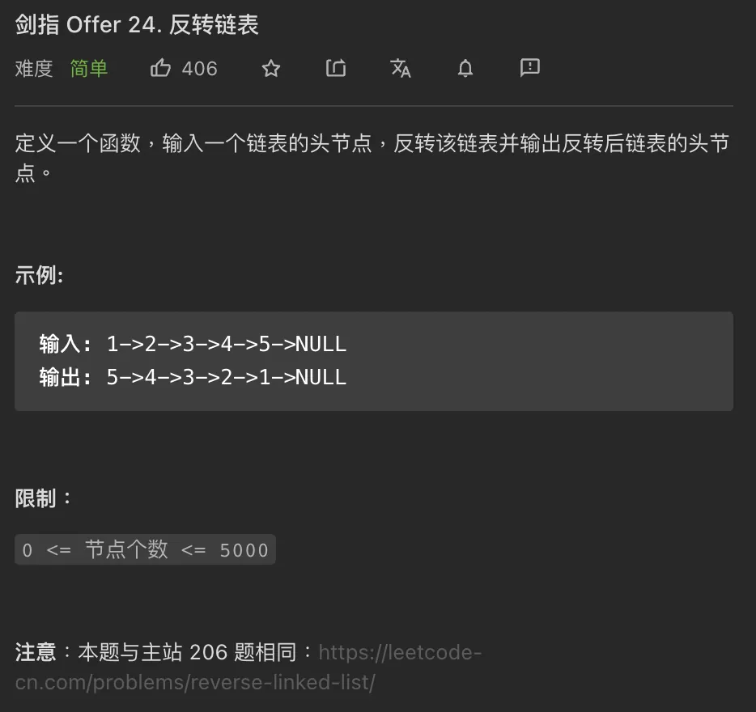
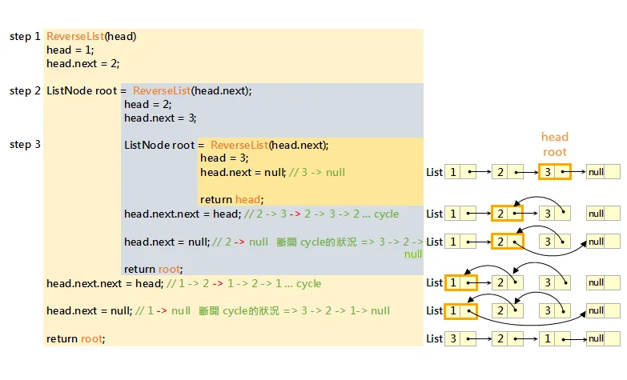

剑指 Offer 24. 反转链表
Question

✍🏽 My Solution
Solution #1 [Recursion]
执行用时：0 ms, 在所有 Java 提交中击败了100.00%的用户
内存消耗：41.1 MB, 在所有 Java 提交中击败了9.84%的用户
class Solution {
public ListNode reverseList(ListNode head) {
if (head == null) return null;
if (head.next == null) return head; // <—递归退出条件
ListNode newHead = reverseList(head.next); // 子問題的解
head.next.next = head;
head.next = null;
return newHead;
}
}
Explanation (in my words)
-
How does their solution work?
- 判斷 head 或 head.next 是否為 null，若
是則回傳 head - 宣告
ListNode newHead使用遞迴去找出反轉後的 head，就是根據 1. 去判斷，若找到 newHead 後開始回傳 - head.next.next 改串接為 head，此時newHead指向子問題的Head，形成反轉
- head.next 則指向 null 斷開
cycle的情況 - 回傳已經反轉的 LinkedList

- 判斷 head 或 head.next 是否為 null，若
-
What is the space/time complexity of their solution?
- time: O(n) 看有幾個節點（有n個）一差樹為線性的
- space: O(n) 遞歸一直壓棧